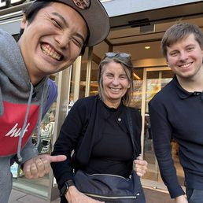

ドイツ人客と巡る秋葉原

本音
本音I won't be able to hold a proper conversation, but I'll survive.旅行中の日本語力について本人の実感が語られた
本音I can always come back hereまた来る前提で楽しんでいる本音。メイドカフェのショーへの評価も上々
今日の要点
- ドイツ人の母親と息子たちの客と秋葉原を回った
- ポケモンカードの購入事情や転売目的の行列を説明した
- ゲームセンター、中古店、レトロゲーム売り場、カプセルトイを案内した
- 客がカードパックを買う日本語を練習し、ポケモンセンターの空く時間帯も案内した
- 昼食はメイドカフェで、動物の絵の希望やライブ開始の案内をした
- ミュンヘンの客とメイドカフェのショーと撮影ルールを楽しんだ
- 秋葉原の歴史やポケカ売り場を案内し、ミュンヘンの天気や地震警報の話もした
- ゲームセンターで4人対戦や音楽ゲームに挑戦した
- ちいかわグッズの店を案内し、フェルンとフリーレンの話をした
- 帰り道に感想を聞き、翌日の相談と名刺交換をして別れた
目次 全28行
録音1 ・ 14:39〜 ・ 180分
- 14:39客の家族と東京滞在
- 14:52ポケモンカードの購入事情
- 15:04ポケモンの紹介とカード談義
- 15:14アニメ文化の説明
- 15:25景品ゲームとカプセルトイ
- 15:35カードゲームとパチンコ
- 15:43中古店で漫画やゲーム探し
- 15:55レトロゲームと商品の相場
- 16:06FF14の展示と秋葉原散策
- 16:21カード購入と日本語練習
- 16:33注文待ちと来日予定の話
- 16:49ゲームや音楽のチケット談義
- 16:56ドール探しと昼食の相談
- 17:04メイドカフェで昼食
- 17:20メイドカフェの体験とライブ
録音2 ・ 17:39〜 ・ 115分
- 17:39メイドカフェのショーと撮影ルール
- 17:45注文の行き違いとAirDrop
- 17:55会計と客の家族の話
- 18:00秋葉原の歴史とポケカ売り場
- 18:05ミュンヘンの天気と地震警報の話
- 18:10パックマン風4人対戦
- 18:20ゲームセンターで音ゲー挑戦
- 18:40ちいかわグッズの店を案内
- 18:45フェルンとフリーレンの話
- 18:47帰り道の感想と翌日の相談
- 18:52名刺と別れの挨拶
- 18:55ほぼ無内容の誤認識区間
- 19:24食事の準備らしき断片
朱書き 全82件
録音1 ・ 14:39〜 ・ 180分
And it's like on the cheaper. → And it's one of the cheaper options.「安いほうの選択肢」は one of the cheaper options と言う。
I think that buying single packs in Japan is very dangerous because Japanese cars are a lot easier to detect if there's a hit. → I think buying single packs in Japan is risky because it's much easier to detect which packs contain a rare card.cars はカードの誤りで、意味が伝わる自然な表現にする。
I mean, you have to decide what your other favorite Pokemon, right? → I mean, you have to decide which other Pokémon is your favorite, right?「どのポケモンが好きか」は which を使う。
That's why you learn. → That's how you learn.学び方を説明する文では how が自然。
Yeah, we don't do that. Because everybody is polite here. → No, we don't do that. People are polite here.否定の返答は No が自然で、理由も簡潔に言える。
One of my kids once tried to play Pokemon cards. → One of my students once tried to teach me how to play the Pokémon card game.続く話では、子どもがカードゲームを教えようとしたことが分かる。
This is a game that made in China. → This is a game that was made in China.受け身の文には be 動詞が必要。
Did there some hotel there? → Is there a hotel there?場所にホテルがあるか尋ねるには Is there を使う。
Also something big in Japan is like the sports anime. → Sports anime are also very popular in Japan.一般的な人気を表すなら、この語順が自然。
So nowadays the actors are not only good at voicing, but also they have to be cute in real life too. → So nowadays, voice actors not only need to be good at voice acting, but also have to be cute in real life.「声優」は voice actors が自然で、文の並びも整えられます。
Maybe you also know what is the Isekai is. → Maybe you also know what isekai is.間接疑問文では疑問文の語順にせず、最後の is も不要です。
So your place should be very big, right? → So your place must be very big, right?強い推量には should より must が自然です。
Another thing is really huge in Japan is gold music game. → Another thing that's really popular in Japan is rhythm games.「音楽ゲーム」は rhythm games が自然で、文の形も整えられます。
You can take a picture of you or me or you know, but some not that. → You can take a picture of yourself or me, but not of some of them.代名詞と語順を整えると意味が伝わりやすくなります（聞き取り不確か）。
But not only for kids, but used against many adults. → But they're not just for kids; many adults use them too.「大人も利用する」という意味なら used against は不自然です。
You look like some piano → You look like you play the piano.人にピアノを弾きそうだと言うなら play the piano が自然です。
If you buy, you should not buy Apple iPhone here. → If you buy a phone here, you shouldn't buy an iPhone.可算名詞の前に冠詞が必要で、語順も自然にする。
Which palette is there again? → Which category was that again?選択肢の分類を尋ねる文脈では「palette」ではなく「category」が自然。
Does Momenza play this game? → Does Momenza play this game?文として自然なため修正不要。
How many people can do you think you can fit here? → How many people do you think can fit in here?疑問文で助動詞が重複しているため、語順を整える。
I don't know because today is the Saturday as you can see there are so many people so local people here know about this stuff. → I don't know. Today is Saturday, and as you can see, there are so many people. The locals know about this stuff.曜日の前にtheは不要で、文を分けると自然です。
But you know, sometimes I give some packs to you guys, but if they win some rear cars, makes me feel like, you know, that's mine, right? → Sometimes I give you guys some packs, but if you win some rare cards, it makes me feel like they're mine, right?rearではなくrareで、主語と動詞の形も整えます。
There are so many, more than 10 kinds of cards in Japan. → There are so many different card series in Japan—more than 10.シリーズの種類を指すならkinds of cardsよりcard seriesが明確です。
Maybe you go travel. → Maybe you're going to travel.予定を尋ねる文脈では、自然な進行形にします。
If you try the Pokemon Center in early morning the might be a challenge. → If you try the Pokémon Center early in the morning, it might be a challenge.the mightは文法的に誤りで、時間表現にはtheが不要です。
So once you order from that searching console, that the people in this shop, they will find and they will tell you once they're ready. → Once you order from that search terminal, the staff in this shop will find the cards and let you know when they're ready.searching consoleよりsearch terminalが自然で、重複した主語を整理します。
Since you stay here several weeks already makes you Japanese. → Since you've been here for several weeks, you've practically become Japanese.継続して滞在しているため現在完了形が自然です。
If you wanna buy this, you have to join the competition here. → If you want to buy this, you have to enter the lottery here.抽選を指すならcompetitionよりlotteryが適切です。
I was just hearing how he does so you're now worrying about him staying outside of your country → I was just listening to how he does it. So, are you worried about him staying outside your country now?質問の形に直し、how he does itとすると意味が通ります。
How many packs you got? → How many packs did you get?過去の出来事を尋ねる疑問文にはdidが必要です。
maybe we will be stay up there this floor so when they're ready they're gonna call my name our number → Maybe we'll stay on this floor, so when it's ready, they'll call our number.will be stayは誤りで、nameよりnumberが文脈に合います。
They are making a line up from outside the stairs. → The line stretches out onto the stairs.行列が階段まで続く状況を自然に表せます。
Most of my students are American. They're from USA. → Most of my students are American. They're from the USA.国名の前には定冠詞 the を付ける。
That's why, you know, I need to wake up early. → That's why I need to wake up early.ここでは you know を省くと自然で簡潔。
I'm going to have this too. → I'm going to get this too.注文する意味なら have より get が自然。
Speaking of PC, I built myself with my hotel for my brother a very good PC → Speaking of PCs, I built a very good PC for my brother at my hotel.built の目的語と場所・相手の語順を整える。
You don't have any specificity, your favorite singer or something? → Do you have a favorite singer or someone specific you listen to?specificity の使い方が不自然で、質問文の形も整える。
I was also asking him, he say, social media, the Instagram account, Kozuno. → I also asked him for his social media account, his Instagram.過去の質問なので asked を使い、語順を自然にする。
you can make them to have the bigger whoopie boobs or something → You can give them bigger boobs or something.make them to have は不自然な使役表現。
It's in the building. I don't think it's limited, so I can just go occasionally and see. → It's in the building. I don't think it's limited, so I can just stop by occasionally and have a look.店に立ち寄って見る意味では stop by が自然。
We'll give you a 60 minutes. → We'll give you 60 minutes.時間の長さを表す名詞の前に冠詞は不要。
And so we order here already what we want to eat. → So, we can order here now. What would you like to eat?語順が不自然で、客への質問として伝わりにくい。
If you wanna order the omurice itself, that's gonna be 14 instead of the 39. → If you want to order the omurice by itself, it costs 14 instead of 39.「単品で」はby itselfが自然で、価格説明も簡潔になる。
And the combo what is it? → And what does the combo include?セットの内容を尋ねる自然な語順。
you cannot take a picture of girls and the other customers about yourself in the food here → You can't take pictures of the staff or other customers in the café.撮影禁止の対象と場所を自然で分かりやすく言える。
if you're lucky they might do some close out live here like once once an hour → If you're lucky, they might have a live show here about once an hour.「ライブを行う」はhave a live showが自然。
If you wanna ask two or three girls, which means you need to buy more tickets. → If you want to take pictures with two or three girls, you'll need to buy more tickets.何をするための券かを明確にし、条件を自然に説明できる。
You can shoot only human drinks → You can only take pictures of people and drinks.shootはこの場面の撮影を表すには不自然。
I'm going to put it in a hand. → I'm going to put it in your hand.「誰の手に」渡すのかを示す必要があります。
So now you want to pick for yourself for now? → So, do you want to pick one for yourself now?質問の語順を整え、「今、自分用に選ぶ？」と自然に聞けます。
Are you sure that I can drink this one? → Are you sure I can drink this?この確認では that と one はなくても自然です。
You should wear it today, the whole time. Until you go back home. → You should wear it all day, until you go home.「一日中」は all day とすると自然です。
I don't find it a dressing, I find it funny. → I don't think it's embarrassing; I think it's funny.文脈上は「恥ずかしい」ではなく「面白い」と対比しています。
last time I guided the other guests with a teenager, one of the boys got really impressed with that. → Last time, I guided another group with a teenager, and one of the boys was really into it.人が体験を楽しんだ意味なら was really into it が自然です。
Would you like to have the data, the smartphone, or you can also have the Polaroid camera? → Would you like the digital photos, or would you prefer a Polaroid photo?選択肢を並列にし、data より digital photos とすると伝わりやすいです。
He's like an uncle. Only he's like a teenager, like 17, 18 years old. → He's like an uncle, but he's only about 17 or 18.Only の位置を整えると対比が明確になります。
That's why it takes time. You have to be adult. → That's why it takes time. You have to be an adult.adult を名詞として使うので an が必要です。
That's a same free novelty that, like, you can get for free. → That's the same free souvenir you can get.same の前に the が必要で、novelty より souvenir が自然です。
I bet you put it between those two boxes we have. → I bet you can put it between those two boxes.置き場所の提案には can put が自然です。
You think your brother can also have fun? → Do you think your brother would enjoy it too?相手の予想を尋ねる自然な質問表現です。
You can request her what animal you do like her to draw. → You can tell her what animal you'd like her to draw.request の使い方と語順を直すと自然です。
So you can take a picture video only without showing the heart. → You can take a photo or video without showing the heart.picture video の並びを photo or video に整えます。
What animal is your line? → What animal would you like?希望する動物を尋ねる簡潔な表現です。
Why the cat holding heart → Why is the cat holding a heart?疑問文には be 動詞が必要で、heart の前に a を置きます。
Now the live concert is coming. The starting. → The live concert is starting now.進行中の開始には be 動詞と starting を使います。
why don't you use this stuff? → Why don't you use this?指している物を勧めるなら this が簡潔です。
録音2 ・ 17:39〜 ・ 115分
What is your dad really like about Japan here? → What does your dad like most about Japan?「What is ... like」は「〜はどんな人か」になる。「何が好きか」は What does ... like
this is one of the oldest part of this town → this is one of the oldest parts of this townone of the の後ろは複数形(parts)にする
Can I even tag your account? → Can I also tag your account?「〜も」と頼むときは even ではなく also。even だと不自然な強調になる
this is a place where you get so many retro stuff → this is a place where you can find so many retro thingsstuff は数えられないので many は使えない。『get』より『find』が自然
people also like to get those retro old stuff → people also like to buy retro stuff like thisretro と old は意味が重なる。stuff は不可算で、those も不自然
If we need fire it's going to be the problem. → If we leave the fire on, it can become a big problem.『火を消す理由』を言いたい文。need fire では意味が通らない(聞き取り不確か)
This for the four people. → This is for four players.be動詞が抜けている。ゲームの人数は players を使う
And how do you move that thing? → And how do you move that thing?自然な英語なので修正不要。
You can't see that they are wearing the gloves, they're taking so hard. → You can see they're wearing gloves; they're playing really hard.「can't see」は文脈上「can see」、「taking so hard」は「playing really hard」が自然。
Maybe it's a place where you can buy the really cheap deal with Chikawa. → Maybe this is a place where you can buy Chiikawa goods really cheaply.「cheap deal with ~」は不自然。「goods」と副詞 cheaply を使うと自然
Like some brush toy. → Like a plush toy.ぬいぐるみは brush ではなく plush(発音 /plʌʃ/ に注意)
This building is so much cheaper compared to the different ones. → This building is much cheaper compared to the other ones.「different ones」ではなく「other ones」。so much より much のほうが自然
But if you don't mind about a second hand in the steel, this is a really good deal. → But if you don't mind secondhand items, this is a really good deal.「中古品」は secondhand items。mind の後ろは about ではなく名詞か -ing を置く
You said you will go to the... you will take a bread train tomorrow? → You said you're going to take the Shinkansen tomorrow, right?予定の確認は will より be going to が自然。bread train は聞き間違いか言い間違いで、bullet train / Shinkansen が正しい
so ask me anything in Japan I'm over here and leave me some nice review later → Feel free to ask me anything about Japan, and please leave me a nice review later.ask about Japan が自然。レビューのお願いは please を付けると丁寧
Have a nice... have some sleep and enjoy your Halloween! → Get some sleep and enjoy your Halloween!「寝る」は have some sleep ではなく get some sleep
マーク 全163件 ・ 本音とネタの印
録音1 ・ 14:39〜 ・ 180分
ネタI got him a great amulet at the shrine, at the Meiji shrine, to find a good job.東京土産と就職祈願の話題になる。
ネタI would show him photos and say, Look, your brother is taller than you.長兄が身長差を信じないという家族の笑い話。
客の声I won't be able to hold a proper conversation, but I'll survive.旅行中の日本語力について本人の実感が語られた。
客の声I just sat for two hours and I watched the painters.客が楽しめた過ごし方が具体的に分かる。
やることI also made some tour route page with AI.ユウキのAI活用例として紹介できる。
客の声For me this borderless team that's not the museum.客の好みに合わせた行き先選びに役立つ。
やることI'm leaving on Monday.滞在日程を踏まえて案内の予定を立てられる。
学びI went to the lady and I told her I got in at the... I got on the station, I'm getting out of the episode. And she corrected it and let me out.改札のトラブル時に駅員へ相談した経験。
学びyou can use it for almost everything. Yeah, the supermarket or anything.旅行中の支払い方法を知る実用的な情報。
ネタIt's been long enough, they won't remember us.再訪するメイドカフェについて冗談交じりに話した。
やることIn November he comes.次の来日時期について具体的な予定が出た。
ネタWe're not going to talk about him. Because it's not cosplay.友人の話題を避けるやりとりが印象に残る。
ネタthe rarest one here is the lucario that's a golden oneカードの珍しさを紹介する話題になる。
客の声An Ascendate Hero pack in English was 15 euros.国ごとのポケモンカード価格を比べる材料。
ネタthey sell those packs only for the kids under 18 years old.転売対策として珍しい販売方法を紹介できる。
客の声I bought it for like, I think, 10 different packs so far here in Tokyo.客のカード購入状況が分かる。
客の声And such a pack in Germany would be like 50 euros.日本との価格差が話題になった。
学びFor the newest set, it's always a raffle.ポケモンセンターでの購入方法を説明している。
客の声I don't buy them, they're way too expensive.空港で売られていたカードの価格への率直な反応。
学びyou have to do enjoy it right that's what I think転売よりもカードを楽しむことを勧めている。
ネタMy favorite is this guy. Alex Slopork.ユウキのお気に入りを見せる場面。名前の聞き取りは不確か。
ネタfeels like you're taking a summer lesson todayポケモン紹介をレッスンにたとえている。
学びsome of them they like to play but mostly they just buy a whistle for moneyカードを買う人の目的について説明している。
学びthis stuff is not only for child but also adultsポケモンが幅広い年齢層に親しまれていると説明している。
やることSo you need to ask me.文化の違いで疑問があれば尋ねるよう促している。
学びLike there's so many anime. They collab with the sports.野球やサッカーなどを扱うスポーツアニメを紹介している。
ネタactors are not only good at voicing, but also they have to be cute in real life too声優の活動範囲とアイドル的な魅力を話すきっかけになる。
学びthe setting anime is the only way that people can spend the moneyメディアミックスの説明につながる。
学びWhat we Japanese people like, let's say the people like him from other countries, it's really different.国や地域でアニメの好みが違うという話題。
ネタDon't worry, it gets much worse.作品の表現の幅を説明する冗談めいた一言。
ネタShe's a human. She's from a different series.ポケモンと他作品のキャラクターを取り違えた場面。
ネタI was in Italy two years ago. I was there for five weeks or something.イタリアの経験から相手との会話を広げられる。
学びThey look easy, but it's not.ゲームの難しさを案内時に伝えられる。
学びI always recommend that kids to go buy in a second hand stores欲しい景品を手に入れる別の方法を案内している。
学びYou win something for sure. You always get it.カプセル玩具と抽選式の遊びの違いを説明できる。
学びRetelling, scalping, right?人気商品の転売が話題になっている（聞き取り不確か）。
やることIn that case, we can go to the official store.探している商品を見つける次の行き先として提案している。
客の声Kids get sad because he could not get the... He could not buy the... That the card that he wanted.カード購入のルールや品切れが子どもに与える影響の話。
学びyou actually need to apply to the something that you come in the white 4 p.m. or something人気商品の購入方法を案内する情報（聞き取り不確か）。
やることwe can play those the video game later in the different arcade後で試す予定が会話に出ている。
ネタCan you guess what this place is for?街歩きで参加者に考えてもらう問いかけ。
学びTUC. That's a gold store.パチンコの景品交換の仕組みを説明している。
ネタHe's a really professional player of this.ゲームセンターの景品を売る人の例として紹介している。
学びthe 10 euro 15 euro 20 euro日本の中古漫画との価格差の話題。
学びsometimes I teach my students using these comics.漫画を使った日本語レッスンの実例。
学びthere's actually three kinds of characters.日本語の文字体系を簡潔に説明している。
ネタThis is German!参加者が本を見つけて反応した場面。
ネタnow we're going to the one for adults. R18.子ども向け売り場から大人向けへ移る案内。
学びyou can spend your time without spending money for free日本での過ごし方について参加者に伝えている。
学びif you can speak English you can get more in a better job英語を学ぶ実用的な理由を説明している。
客の声in Germany we hardly have any bookstores left日本とドイツの書店事情を比べる話題。
ネタyour brother Lorenzo was at home参加者の家族にまつわる具体的な思い出。
客の声the only table where I could use them was in the playground.参加者の子ども時代の具体的な遊びの記憶。
学びif you want to buy the one with the box in mint condition中古品の価格が状態や箱の有無で変わる説明。
学びthis is the limited version. That's even more expensive. It's like 300 euros.限定版商品の価格を説明する具体例。
学びthese are not for sale originally that's why if you go to different stores they get a different prices店ごとに価格が異なる理由を説明している。
ネタThis is a vending machine that's gonna gamble in.自販機を「ギャンブル」と表現している。
学びIf you're lucky, you might get this for a very low chance.自販機の仕組みを説明している。
やることI can pay for both.同行者の買い物代を支払っている。
学びThis one, they said so many Final Fantasy 14 stuff.店舗にゲーム関連商品が多いと紹介している。
学びmy main is warrior同行者のゲーム内のメインジョブが分かる。
ネタWarrior should smell much worse, right?戦士はもっと臭うはずだという冗談。
学びThis one is actually... oh no no no, this 500 yen.体験に必要な金額を確認している。
ネタWhich one do you like? Tank, obviously.同行者の好みが即答で分かる。
客の声I'm doing my in-game name.同行者が刻印する内容を決めている。
ネタHopefully you won't do the wrong letters.文字を間違えないようにという軽いやりとり。
客の声So the oldest is 30 and he's the youngest 25.兄弟それぞれの年齢が分かる。
ネタThey never stop fighting each other huh?兄弟の関係をめぐる会話の話題。
学びif you stay here for a long time, maybe I don't know, that's not a good idea.東京で暮らすことへのユウキの実感を話している。
客の声I was in Ghana for three months.同行者の海外滞在経験が分かる。
ネタSo that I can give away to the other guests.ツアー客へのちょっとした贈り物の話題です。
学びYou can say this 15 and this 10, please.買い物で使う日本語を実際に練習しています。
学びSo when they are ready, they're gonna call your number.店内での注文品の受け取り方法が分かります。
客の声I'm retired. What did you do? I was financial advisor.客の仕事と現在の状況が分かる会話です。
ネタ780, but still, like, 3 or 4 euro.円とユーロで価格感を比べています。
ネタsome people even study Japanese from hololive日本語学習と配信コンテンツを結びつける話題です。
ネタI like this girl group with the five girls five girls待ち時間の会話から相手の音楽の好みが分かる。
学びEven this morning I woke up at 5 a.m.時差に合わせたレッスン時間の具体例。
学びhitori? Hitori, futari, sa, ninje, so many different world counters.日本語の人数の数え方を説明する話題。
ネタwas in top 500 in Germany兄のゲームの実力を示す具体的な話。
ネタit would be like 5,000 euros. Everything got so much more expensive.PC価格の上昇を示す具体的な金額。
やることnext time he has some that kind of chance maybe he can ask me次のチケット購入で相談を受ける約束につながる。
ネタthey bring your door and they do something meet up here人形を持ち寄って集まる場所の文化を紹介している。
学びthis building at a nine stories nine floors店を回るのに必要な時間を考える具体的な情報。
客の声I love Chikawa too.客の好みが分かり、次の会話のきっかけになる。
客の声what do you usually cook and eat back in Germany客の食の好みが分かり、話を広げやすい。
ネタBecause if you want to buy the cheese in Japan it's very expensive.日本とドイツ・イタリアの食材価格の違いが話題になった。
ネタBeer is cheaper than water in Germany sometimes.客がその場で訂正した、印象に残る食べ物の話。
客の声They're not picky.家族の食の好みが分かる。
学びSo, how much you need to pay if you stay here?料金説明を短く整理すると、初めての客にも伝わりやすい。
学びThe combo is a meal, drink, and a picture.セット内容を端的に伝える説明として使える。
学びyou cannot take a picture of girls and the other customers撮影ルールを誤解なく伝える必要がある。
学びOne ticket for one girl.写真券の必要枚数を簡潔に説明している。
ネタMake a heart like thatメイドカフェの体験を紹介するときに使える場面。
やることAfter the check, I want to take a picture with her.会計後に写真を撮る予定が話されている。
学びwhen I take my customers, especially when they are teenagers, They are teenagers, they feel really embarrassed.客の年齢によって体験への反応が違うという案内上の気づき。
やることOh, rental carcass. She will choose one, and the other one will be able to get the gift.レンタル品と持ち帰り用の品を選ぶ流れが出ている。
客の声I don't find it embarrassing. But maybe kids find it.体験を恥ずかしいと感じるかどうかは人によって違う。
話のタネone of the boys got really impressed with that.年齢にかかわらず楽しめた例として案内に使える。
やることWould you like to have the data, the smartphone, or you can also have the Polaroid camera?写真の受け取り方を客に選んでもらう場面。
話のタネHe was just... Now, next. Okay, he's still... He's sitting there! He's like, take me back home.体験を恥ずかしがった客の印象的なエピソード。
客の声So what's your impression? It's fun! It's fun!体験直後の率直な感想。
客の声I think my brother has to come here.同行していない家族にも勧めたいという反応。
学びYou can request her what animal you do like her to draw. Yeah. Maybe not a Pokemon because of copyright.描画の希望を聞く際の著作権上の注意に触れている。
客の声Can I just have hearts?動物以外の希望も出てきた場面。
やることI'll take a picture of you guys with this.撮影を申し出ている。
やることwhy don't you use the light stick?ライブ開始時に客へ参加を促している。
録音2 ・ 17:39〜 ・ 115分
学びno shooting from your own anglesメイドカフェの撮影ルールの実例。ツアーのお客さんへの事前説明に使える
ネタDon't forget to subscribe to our videos on social media with hashtag Maydream店がSNS拡散を促す定型フレーズ。案内文のネタになる
やることI wonder if my order is there注文が通っていない可能性がある。会計前に店員へ確認が必要
やることwe just have to make sure we don't pay for it未注文の分を会計に入れないための確認事項
客の声I can always come back here気を遣いつつ、また来る前提で楽しんでいる本音
やることI'm gonna make an albumお客さんへ写真と動画を後で送る約束
学びAirDrop in general just doesn't workツアー中の写真共有はAirDropに頼れない。共有アルバムなどの代替を用意しておく
客の声I have sensory overload刺激が強すぎるサイン。ツアーの終わり方や休憩のタイミングを調整する材料
やることArcade will be the last oneこのあとの行程が決まった。食後の運動も兼ねる
ネタyou can give one of them to your brotherお土産選びで兄弟の話が出た。会話のタネになる
客の声you had a better time than before前回の訪問と比べた満足度。店選びの手応えになる
客の声This was a lot more exciting.メイドカフェへの率直な評価。ツアーの売りとして使える
ネタHe was a consultant at BCG.家族背景の話のタネ。仕事で何度も来日している背景がある
ネタHe just finished his PhD two months ago兄の近況。次に会ったときの話題になる
やることis it okay for me to upload some pictures on my Instagram投稿の許可をもらった。投稿時にアルベルトをタグ付けする
ネタthis town originally started as a black market秋葉原の成り立ちとして、ツアーで使える定番の説明
ネタdid you see any 30 anniversary one客の関心がカードにあるので、カード系の案内につなげられる
客の声Just looking.店員に声をかけられたときの定番の返し。客の温度感が分かる
学び180 is a regular price right定価と転売価格の差は、カード文化を説明する話のタネになる
ネタparties should be much more expensive I guessリセール価格への客の関心が分かる(聞き取り不確か)
ネタhow the weather in Munich right now客の出身地が分かる。天気は会話の入り口に使える
客の声they hit like 35 40 or something like that欧州の猛暑の実感を聞けた。気候の雑談に使える
ネタSirens all over the city警報の体験談は、日本の地震の話につながる
ネタthat's a French app, but it says 9.9誤報の笑い話として使える。アプリ経由の警報という点も面白い
学びMaybe hide under the desk or maybe go outside地震時の行動を英語で説明できた。ガイドで再利用できる表現
客の声We didn't even feel it体験談の落ち。『何も起きなかった』という本音
客の声wow he's a monsterゲームで一気に打ち解けた様子が分かる
学びGood game!対戦後の定番のひと言。客とのゲーム体験の締めに使える
ネタThat's almost like a real sport.音楽ゲームの激しいプレイをスポーツにたとえている。
ネタThey're almost like hitting laundry machines, I think.激しいゲームプレイを洗濯機にたとえた冗談。
学びmemorize all the notesこのゲームは記憶力が鍵、という客向けの説明に使える
やることFirst we're gonna take a picture for an icon.案内の最初の手順。毎回同じ流れで案内できる
学びBut you don't need a tutorial?経験者かどうかを先に聞く接客の型
客の声Level 3 is too easy, right?客の腕前の見極め。難易度を上げる合図になる
客の声I need to struggle!楽勝より挑戦を求める本音
学びNo no only the one fast one初心者へのコツの伝え方の例
客の声You got so much better than last time right?リピート客への声かけ。上達を褒めると盛り上がる
ネタinstead of drinking or smokingツアーで話せる日本の若者とゲーム文化の話のタネ
ネタThis building is so much cheaper compared to the different ones.安く買えるビルの情報はツアーのお土産案内に使える
ネタThis is Chikawa Hacheware and Usagi.外国人客にちいかわのキャラを説明する場面で、ツアーの話のタネになる
ネタShe's like 16 years old.キャラの年齢を使った紹介は、次の話題(エルフで2000歳)に自然につながる
学びthis is a really good deal中古ショップのお得さを客に伝えた言い方で、ツアーでそのまま使える
ネタlike the tourist traps, I mean, they sell so much more expensive穴場の店を案内する価値を客に説明する言い方として使える
ネタshe's like 2000 years oldフリーレンの年齢ギャップは、アニメ好きの客に刺さる話のタネ
客の声she's completely obsessed with usシンガポールのファンが日本のアニメに夢中だという本音の声
客の声I love seeing a lot of people buying cards客が一番印象に残った点で、ツアーの見どころを決める材料になる
客の声So much dopamine.秋葉原の刺激の強さを客が自分の言葉で表した感想
ネタI mean like two generations to own a shop家族経営の店という文化の違いは、次のツアーで話せる
ネタIt was 28,000?ブースターBOXの値段の具体例で、相場の説明に使える
学びUsually, usually, they're like 23,000.カードの相場を客に伝えるための数字
学びI'm glad that you learn some new culture todayツアーの締めの一言として使える
やることleave me some nice review laterツアー後にレビューを頼む習慣で、集客に直結する
ネタbrother sibling will come to hereリピートや紹介の可能性がある客の話
やることI'm going to go to the restaurant.食事に行く予定を話している可能性がある。ただし繰り返しノイズの中なので要確認
ネタI think we're going to have a lot of food.食事の場面の話のタネになりうる。ただし幻覚の可能性が高い
やることI'm going to make a lot of food.料理や食事の準備の話かもしれない。繰り返しが多く確度は低い
次に活かす
- ポケモンセンターは週末を避け平日午前10時か11時ごろを勧める
- パックは単品を避けコンビニやポケモンセンターで買う方法を伝える
- 客が体験直後に出した感想はレビューや紹介文に使える
- メイドカフェでは描いてほしい絵を客に選んでもらい写真の受け取り方も確認する
- ツアー後にレビューを頼む習慣は集客に直結する
- 別れ際の締めの一言を決めておく
- リピートや紹介につながりそうな客の話は記録しておく
- 音楽ゲームの激しいプレイをスポーツにたとえると盛り上がる
文法のまとめ
録音1
- 受け身のbe動詞の抜け：game that made → game that was made
- 間接疑問文の語順：what is the Isekai → what isekai is
- 疑問詞の選び方：what other Pokemon → which other Pokemon
録音2
- 複数形の抜け：one of the oldest part → one of the oldest parts
- be動詞の抜け：This for the four people → This is for four players
- 不可算名詞：so many retro stuff → so much stuff
‹ ゲスト帳にもどる